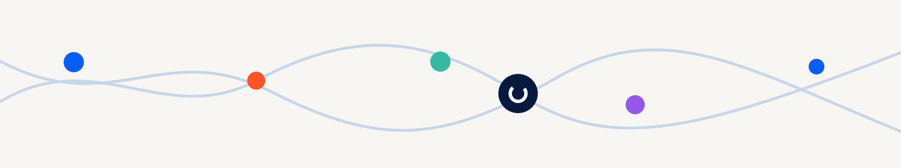

その疑問、どのテーマ？
見出しは、Googleでよく検索される言葉から作った疑問です。答えの1行は制度で決まっていること、その先のページでSNSの意見が読めます。
消費税減税はいつから、何％？
制度の答えとSNSの意見を読む食料品を8％から1％へ下げる法律案が国会で審議中です。始まるのは2027年4月の予定です。
いまの段階法律案を国会で審議中。まだ成立していません
よく一緒に検索される言葉いつから何%財源デメリット給付付き税額控除
免許返納は何歳から、どう切り出すか
制度の答えとSNSの意見を読む全国一律の返納年齢はありません。70歳と75歳は、更新時の講習や検査が変わる節目です。
いまの段階制度は現行どおり。義務化は決まっていません
よく一緒に検索される言葉何歳から説得特典運転経歴証明書
憲法改正はどう決まり、何が争点か
制度の答えとSNSの意見を読む国会の発議と国民投票の過半数で決まります。1947年の施行以来、改正は0回です。
いまの段階憲法の改正はまだ決まっていません。国会での議論と政党の提案の段階です
よく一緒に検索される言葉国民投票9条緊急事態条項手続き
皇室典範改正、何が変わる？愛子さまは？
制度の答えとSNSの意見を読む女性皇族は結婚後も皇族の身分を保ちます。女性天皇・女系天皇は、どちらも今回の改正では認めていません。
いまの段階施行予定日を過ぎました。施行後の条文は未確認
よく一緒に検索される言葉何が変わる愛子さま女性天皇女系天皇
副首都はどこに、いつ決まる？
制度の答えとSNSの意見を読む法律は成立済み。国が要件を定め、道府県の申出を受けて指定します。指定の時期はまだ決まっていません。
いまの段階法律は10月30日に施行予定。指定の時期は未定
よく一緒に検索される言葉どこ候補地いつ決まるメリット・デメリット
生成AIと著作権、何が侵害になる？
制度の答えとSNSの意見を読む既存の作品に似ていること（類似性）と、その作品をもとにしたこと（依拠性）の両方があるとき。文化庁の考え方に沿った整理です。
いまの段階文化庁の考え方が基準。AI生成物の確定判例は確認できていません
よく一緒に検索される言葉侵害事例どこまでOK文化庁依拠性
辺野古の転覆事故、何が分かっていて何が争点か
制度の答えとSNSの意見を読む研修旅行中の船2隻が転覆し、2名が亡くなりました。公的機関の公表と、SNSの意見を分けて整理しています。
いまの段階事故調査報告書は未公表
よく一緒に検索される言葉転覆何が分かっている報告書
部活動の地域移行はいつから？
制度の答えとSNSの意見を読む2026年4月からの3年間が改革実行期間の前期です。学校と地域ごとに、段階的に進みます。
いまの段階改革実行期間の前期（1年目）
よく一緒に検索される言葉いつから費用問題点親の負担
自転車の青切符、何歳から・いくら？
制度の答えとSNSの意見を読む16歳以上が対象です。主な例で3,000円から12,000円。切られたら納付書で納めます。
いまの段階2026年4月に制度が始まっています
よく一緒に検索される言葉何歳からいくら一覧払い方
学校のあだ名禁止、全国一律の決まりはあるのか
制度の答えとSNSの意見を読む国の定めは確認できません。学校ごとの運用です。
いまの段階国の法律・方針に「あだ名禁止」の定めは見つかっていません
よく一緒に検索される言葉なぜおかしい文部科学省さん付け
当てはまるテーマがありません。別の言葉で探してください。
疑問ごとの解説記事
よく検索される疑問に1本ずつ答える記事です。制度で決まっていることと、SNSで意見が分かれている理由を分けて書きました。
最近データを更新したテーマ
テーマ一覧へ ›直近に新しい投稿を取り込んだ順に、5テーマを並べています。
辺野古高校生死亡事故
辺野古の転覆事故、何が分かっていて何が争点か
このテーマの状況
- 収集 658件
続けて更新した4テーマ
理由から考える話題のテーマ
10テーマの論点アトラス（テーマごとの論点を一覧）開く
10テーマの論点アトラス
テーマごとの論点を一覧できます。色は各テーマ内での立場を表し、論点の位置そのものは意味を持たせていません。
このサイトの作り方と読み方（4ステップ）開く
たくさんの声から、見えてくるものがある。
SNSにあふれるさまざまな意見を集め、AIと人の目で論点ごとに整理。賛成と反対だけでは見えない、考え方の広がりを可視化します。
社会のあちこちにある声を集める。
ニュースやSNSで交わされている公開投稿を、テーマごとに集めます。特定の立場に偏らないよう、さまざまな言葉と視点から声を探すのが決まりです。
AIと人の目で、論点をほどく。
集めた投稿をAIが分類し、人が内容を確かめます。ポジティブ・ネガティブの二分ではなく、「何について、どう考えているか」の整理です。
賛否の間にある、考え方まで見える。
意見を4つの立場に分けて表示。数字だけでなく、代表的な主張と背景にある論点も一緒に読めます。
あなたの考えも、地図のひとつに。
テーマを読んだら、あなたの考えに近い選択肢へ投票できます。誰かを言い負かすためではなく、考え方の広がりを一緒に見つけるための投票です。
